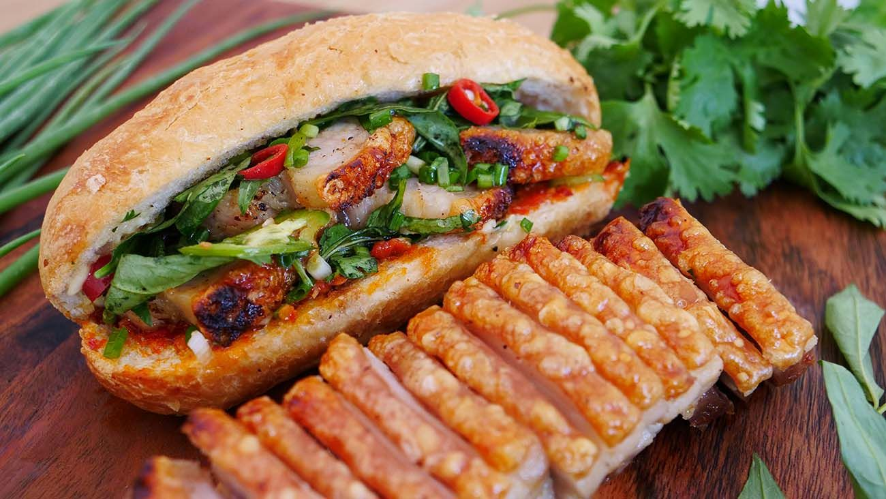

BANH MI

DESCRIPTION
Banh Mi Vietnamese sandwiches are an incredibly delicious meal, filled with amazing
flavors and various textures that combine to provide an amazing, and satisfying, eating experience.
Banh Mi sandwiches are typically served on a French-styed baguetter roll, with either pork,
or chicken, with an assortment of vegetables ranging from spiced cucumber to pickled
carrot and daikon. Cilantro, chiles, or jalepeños are then added as the final touch.
INGREDIENTS
CRISPY PORK BELLY
- 2-3lb (907g) porkbelly with skin on.
- 2 tablespoons (17g) vegetable oil.
- Salt to taste.
- 1 tablespoons (9g) black peppercorn blended.
- 1 tablespoon (3g) sichuan peppercorn blended.
- 1 tablespoon (10g) white peppercorn blended.
PICKLE MEDLEY
- 3 whole carrots, julienned.
- 1 daikon, julienned.
- 1 cup (240ml) rice vinegar.
- 1 cup (240ml) water.
- 2 tablespoons (28g) granulated sugar.
- 1 tablespoon (10g) salt.
- 1 tablespoon (5g) coriander seeds.
- 2 pieces of lime zest.
SWEET CHILI SAUCE
- 3/4 cup (151g) sugar.
- 1/4 cup (63g) sambal oelek.
- 1 cup (211g)rice vinegar.
- 1/4 cup (60ml) water.
- 2 tablespoons (20g) fish sauce.
- 8 cloves garlic, rough chopped.
- 2 kaffir lime leaves.
- 1 tablespoon (8g) corn starch.
BANH MI
- 4 baguettes.
- Fresh cucumber sliced.
- 5 red fresno chillies sliced thinly.
- Pickle medley.
- Mayo for spreading.
- Sweet chili sauce for serving.
- Fresh cilantro leaves for serving.
STEPS
CRISPY PORK BELLY
- Preheat oven to 300F.
- Place pork belly on a wire rack, season it with salt on both sides, and let it sit uncovered in
your fridge overnight.
- In a blender, place the peppercorns, and blend until you get a powder. Season the pork
belly on the underside and not the skin. Place the pork belly in some foil and wrap just
the bottom leaving a border around the edges.
- Rub a thin veneer of vegetable oil on the skin and season the skin generously with kosher salt
. Place in the oven for 2.5 hours, check halfway to ensure the foil is stil snug.
- Increase oven temperature to 500F. Place on a wire rack, set over a lined baking sheet, and Place
in the oven for 25-30 minutes.
- Once ready, take it out and let it sit for five minutes. Using a serrated knife slice the belly,
about 1/2 inch thick.
PICKLE MEDLEY
- Place the carrots in a quart container. Place daikon in a pint container.
- In a small pot, add rice vinegar, water, sugar, salt, coriander seeds, and lime zest;
bring it to a boil and immediately remove from the head and strain that hot liquid over your
vegatables to submerge them. Let them sit until they reach room temperature.
SWEET CHILI SAUCE
- In a saucepot add sugar, sambal oelek, rice vinegar, water, and fish sauce,
whisk; then turn the heat to medium-high and bring to a boil, let it reduce for five minutes.
- In a small bowl, whisk together corn starch and a splash
of water to make a slurry, pour that into your sweet chili sauce,
reduce the heat to low, let that simmer while you stir until thickened. Cut the heat,
then add garlic and the kaffir lime bruised.
BANH MI
- Cut your baguettes into a 12” inch segment; then wrap them in foil and place
them into a warm oven for 5 - 10 minutes. Next, cut your bread, so one side is connected.
- Generously mayo the inside lay down as much pork belly as you desire, shingle on your fresh sliced cucumber,
followed by a stack of pickled vegetables, sliced spicy peppers of choice, and finally some
fresh cilantro.
Return to Main Page.